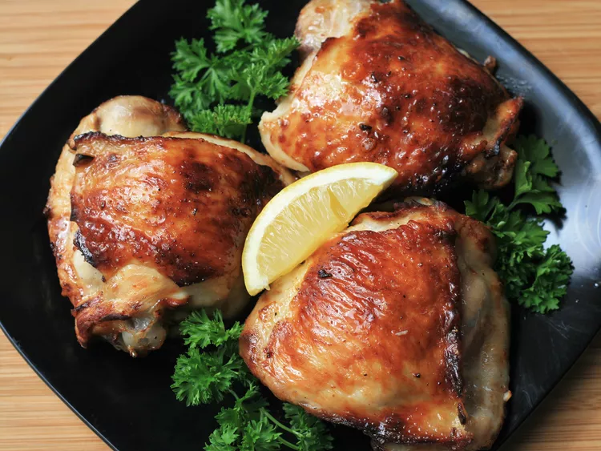

Lemon Chicken That Will Delight Your Date

Description
Picture this: a sizzling plate of tender, golden-brown chicken, infused with the vibrant zest of fresh lemons. With each bite, the tangy citrus notes dance across your taste buds, balanced by the subtle sweetness that lingers on your palate.
The succulent chicken is expertly seasoned, marrying the brightness of lemon with a symphony of complementary herbs and spices. As you indulge in this exquisite dish, the combination of flavors creates a harmonious melody that leaves a lasting impression. This lemon chicken recipe is an absolute delight, guaranteed to tantalize your senses and impress your date with its irresistible charm.
Ingredients
- ¼ cup lemon juice
- 2 tablespoons olive oil
- 1 teaspoon Dijon mustard
- 2 cloves garlic, minced
- ¼ teaspoon salt
- ⅛ teaspoon ground black pepper
- 4 skin-on, bone-in chicken thighs
- 4 lemon wedges
Steps
- Whisk lemon juice, olive oil, Dijon mustard, garlic, salt, and pepper together in a bowl. Set marinade aside.
- Place chicken thighs into a large resealable plastic bag. Pour marinade over chicken and seal bag, making sure to cover all parts of chicken. Refrigerate for at least 2 hours.
- Preheat an air fryer to 360 degrees F (175 degrees C).
- Remove chicken from marinade and pat dry with paper towels. Place chicken pieces in the air fryer basket, cooking in batches if necessary.
- Fry until chicken is no longer pink at the bone and the juices run clear, 22 to 24 minutes. An instant-read thermometer inserted near the bone should read 165 degrees F (74 degrees C). Squeeze a lemon wedge over each piece upon serving.